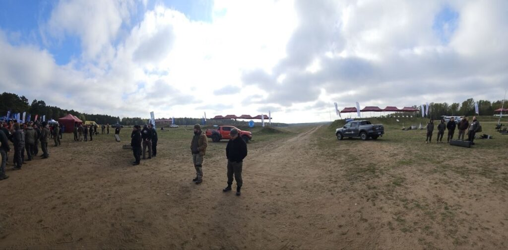
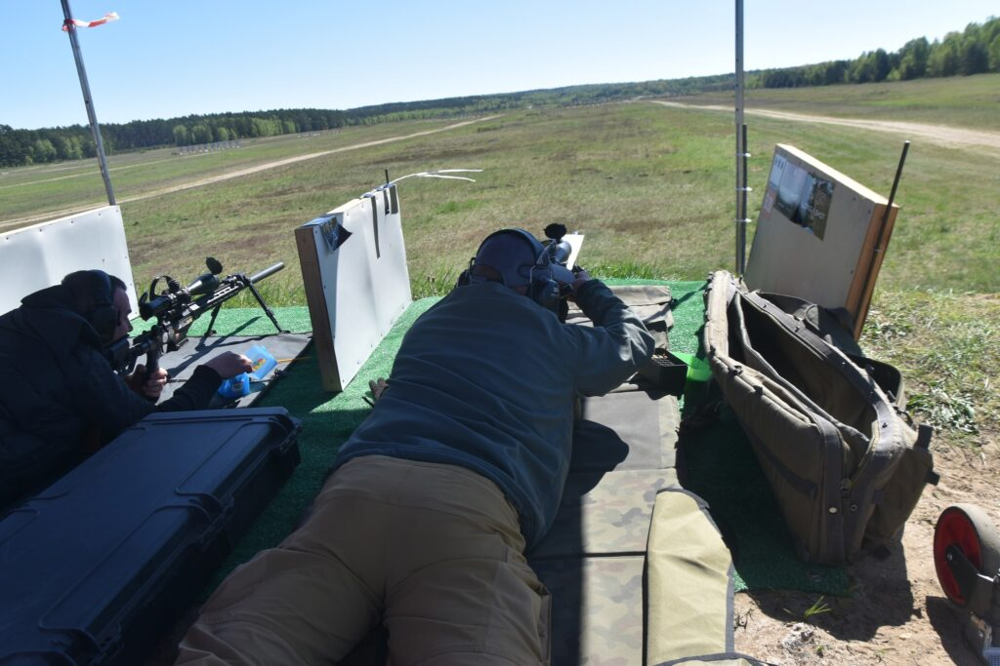
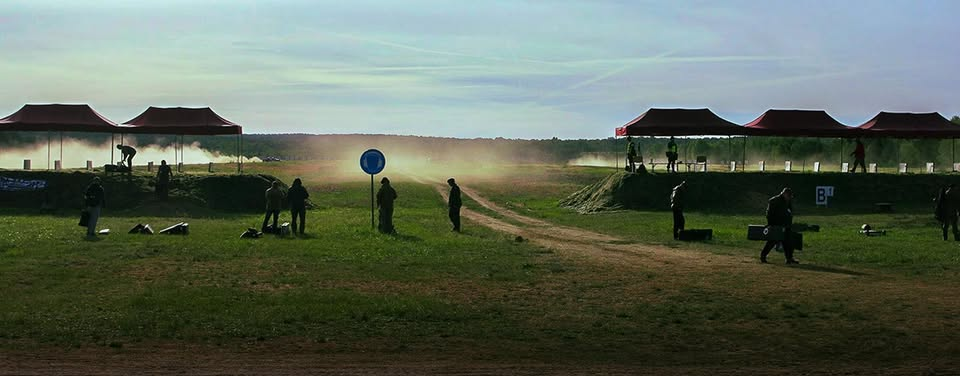
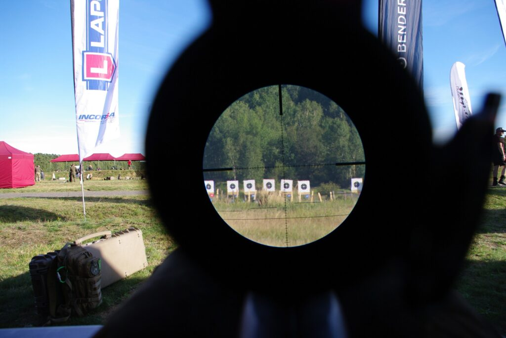
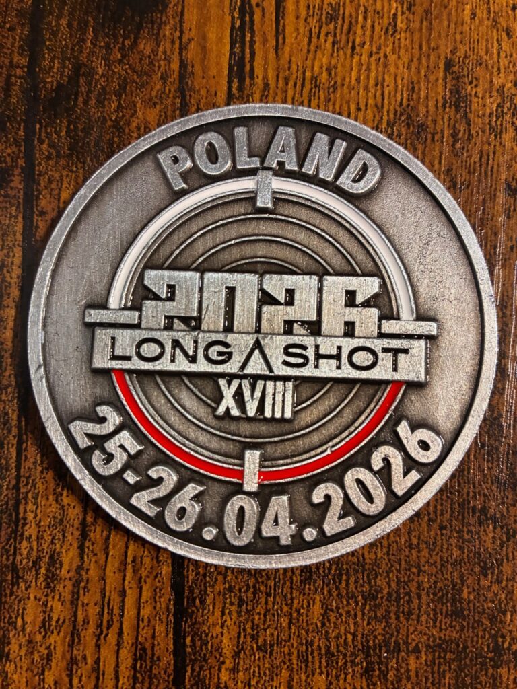

Longshot 2026 — relacja z zawodów. 578 strzelców, wiatr jak wróg i lekcja której się nie zapomina
2026-05-04
W miniony weekend (25-26 kwietnia 2026 roku) na strzelnicy poligonu w Wędrzynie odbyły się zawody Longshot 2026. Była to XVIII edycja tej imprezy gromadzącej strzelców długodystansowych z całej Europy. Lista startujących zawodników była długa, kończyła się na pozycji 578 i obejmowała zawodników z Polski, ale również z Niemiec, Estonii, Łotwy, Francji, Włoch, Litwy, Rumunii i szeregu innych krajów 😊. Zawodnicy startowali też w szeregu klas, a to „standard”, „semi auto”, „magnum”, „supermagnum”, „open”, „karabin produkcyjny”, klasy historyczne oraz (po raz pierwszy) – broń bocznego zapłonu.
Jak wspominał admin, miałem zaszczyt uczestniczyć w tych zawodach (po raz pierwszy, lecz raczej nie ostatni) jako zawodnik w kategorii semi-auto i chciałem się z Wami podzielić wrażeniami z tego startu. Co prawda, muszę to zaznaczyć, jestem strzelcem długodystansowym o profilu strzeleckim nieco odmiennym od typowych zawodów tarczowych, jednak uznałem, że warto sprawdzić siebie i swój sprzęt w tego typu strzelaniu, by zobaczyć jak blisko środka tarczy jestem w stanie trafić. Pojechałem więc na zawody, troszkę „z biegu” – bez głębszych przygotowań do strzelania tarczowego, tuż po powstaniu sekcji długodystansowej mojego klubu sportowego Centrum Strzeleckie RP – Strzelecki Klub Sportowo – Kolekcjonerski RP w Aleksandrowie Łódzkim, reprezentować „barwy klubowe” – licząc po cichu, że nie będę ostatni i tłumacząc sobie, że nawet jeśli będę – to w końcu jadę tam po naukę i doświadczenie 😊.
Od razu muszę się przyznać, że wyszedł mój całkowity brak obycia w tego typu startach i udziale w tak wielkich imprezach i na przykład całkowicie pominąłem udział w dniu treningowym, który pozwoliłby mi zweryfikować nastawy broni i wczuć się lepiej w atmosferę zawodów. Mimo to, przyjeżdżając na teren zawodów od razu poczułem wsparcie bardziej doświadczonych uczestników i kadry zawodów, dzięki czemu szybko przełamałem początkowe zagubienie i udało mi się dokonać formalności związanych z rejestracją w biurze zawodów. Już wtedy dało się odczuć, że zawody mają rangę międzynarodową i momentami łatwiej było usłyszeć obok język niemiecki czy francuski niż polski.
Kolejnego dnia po uroczystym otwarciu zawodów, w którym uczestniczyli przedstawiciele władz cywilnych i wojskowych, rozpoczęły się strzelania konkursowe. Niestety (a może i lepiej – bo zawody okazały się bardzo wymagające), prognozy pogody sprawdziły się aż w nadmiarze – padać nie padało, ale wiatr postanowił pokazać, że człowiek strzela ale to Pan Bóg kule nosi. Wiało silnie, porywiście, ze zmiennych kierunków. Te warunki powodowały, że celne strzelanie na dłuższe dystanse wymagało ogromnych umiejętności, w tym szczególnie w zakresie „czytania wiatru”, albo po prostu bardzo dużo szczęścia (choć bazowanie na tym chyba wymagałoby go tyle, co trafienie „6″ w totka). Wiatr potrafił się na stanowisku strzeleckim zmienić o 160 stopni co do kierunku i od 0 do 7 m/s w zakresie prędkości w ciągu JEDNEJ minuty – podaję wyniki własnych pomiarów bezpośrednio przed strzelaniem na 800m. Do tego zupełnie inny wiatr był kilka metrów wyżej na szczycie paraboli pocisku a jeszcze inny w bezpośredniej strefie tarcz. Opanowanie tego wszystkiego powodowało, że mózg pracował na najwyższych obrotach cały czas próbując obliczyć właściwe poprawki i strategię strzelania.

W tym miejscu chciałem bardzo podziękować mojemu instruktorowi strzelania długodystansowego Tomaszowi Małaniakowi za ogromne wsparcie i porady on-line na gorąco – bez Ciebie w życiu bym tych warunków nie ogarnął! Tak czy inaczej – ta ciągła praca powodowała, że czas między strzelaniami mijał nie wiadomo kiedy. A czasu te zawody wymagały dużo – strzelaliśmy w IX turach, kolejno na dystanse 300, 600 i 800 m.

Na dystansie 300 metrów, gdzie energia pocisku jest największa, wiatr miał stosunkowo najmniejszy wpływ na trafienia i udało mi się trafić dwie wewnętrzne 10, tu jednak niestety totalnie zepsułem dwa strzały (2 i 3 punkty) i trochę zepsułem trzeci ☹ to moje głupie błędy – tendencja do „wymuszania” strzału dała o sobie znać, ale lekcję odrobiłem i w kolejnych strzelaniach bardzo się z tym już pilnowałem.
W kolejnej serii na 600 m nie doszacowałem poprawki na wiatr (który akurat w tym momencie wiał względnie stale) i trafienia w całości przemieściły się na lewą stronę tarczy. Po długich konsultacjach z Tomkiem Małaniakiem udało mi się podejść do serii na 800 metrów z wypracowaną strategią walki z wiatrem, dzięki czemu w tej serii trafienia wróciły „osiowo” w „czarne”, za to podobnie jak wielu innych strzelców trafiałem nieznacznie powyżej środka tarczy. Ten element muszę jeszcze przepracować – co się wtedy zadziało? Ostatecznie dzień zakończyłem około godziny 20:00 na 16tej pozycji w kategorii semi auto z wynikiem 159 punktów.
Kolejnego dnia odbyło się strzelanie dodatkowe na 1100 metrów. Pierwszy raz strzelałem na tak długi dystans a tu wiatr dalej płatał figle, choć wydaje mi się, że był nieznacznie bardziej stabilny – za to zmienił się jego główny kierunek. Nadal jednak warunki były bardzo trudne i wielu strzelców schodziło ze stanowiska z zerowym wynikiem. Ja dodatkowo znów zrobiłem błąd – powinienem był wyczyścić broń po poprzednim treningu, pojechać na strzelnicę i na nowo delikatnie ją przestrzelać zamiast jechać na zawody z bronią niewyczyszczoną po całym poprzednim treningu. Efekt był taki, że na 10 strzałów zaliczyłem 3 zacięcia a później goniłem, żeby zmieścić się w czasie, przez co nie zwróciłem uwagi, że w trakcie strzelania wiatr przy tarczy zmienił kierunek z lewej na prawą stronę. W efekcie w tarczy byłem tylko raz, co i tak pozwoliło na zajęcie 10go miejsca w mojej kategorii sprzętowej.


Świadczy to o naprawdę dużej trudności zawodów, podobnie jak to, że jedynie 5 strzelców miało na tarczy wyniki dwucyfrowe a jedynie Emil Leszczyński (bezkonkurencyjny w tej kategorii) osiągnął wynik 46 punktów, kolejnego zawodnika pokonując aż o 29 punktów.
Podsumowując – zawody były świetnie zorganizowane, atmosfera wręcz „magiczna” a doświadczenie zdobyte dzięki udziałowi w nich uważam za bezcenne. Jestem pewien, że nie były to ostatnie tego typu zawody, w których brałem udział, choć nadal strzelanie typowo tarczowe uważam bardziej za „dodatek” a nie główny mój cel treningowy.

Na koniec chciałem bardzo podziękować osobom, dzięki którym możliwa była moja droga w strzelectwo, w tym długodystansowe. Chronologicznie pierwsze moje podziękowania trafiają do Centrum Strzeleckie RP – Strzelecki Klub Sportowo – Kolekcjonerski RP w Aleksandrowie Łódzkim, gdzie zdobyłem licencję zawodniczą PZSS oraz gdzie zaopatruję się na bieżąco w „materiały treningowe”. Kolejne podziękowania należą się Krakenowi prowadzącemu szkola-strzelania.pl, który nauczył mnie obycia z bronią palną w ogólności oraz podstaw strzelania na dystansach nieco przekraczających możliwości ar15 czy tzw. „kałaszka”, różnic i zastosowania miar kątowych i ogólnie fundamentów długodystansowego strzelectwa (to dzięki niemu mam swoją specyficzną postawę strzelecką leżąc 😊). Na koniec, choć już wspomniałem o tym wcześniej, moje zdecydowanie największe podziękowania dla Delta Optical Strzelectwo i Myślistwo, organizującej serię szkoleń Delta Trening prowadzonych przez Tomasza Małaniaka, który jako instruktor piłuje i szlifuje moje umiejętności i który z całym poświęceniem pomagał mi i wspierał swoim doświadczeniem i wiedzą w sytuacji, gdy wiatr przerastał całkowicie moje umiejętności w czasie zawodów.
Adam.